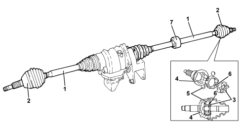

INTRODUCTION - AXLE
- Path
- Descriptions > 27 AXLE > INTRODUCTION - AXLE
- Kind
- system description
- Applies to
- engines: 1.8; all production periods
- Interactive page
- https://sloeber94.github.io/elrnDB-fCrm/en/#/194002439
Applies to: engines: 1.8; all production periods
DRIVESHAFTS AND JOINTS
The driveshafts (1), made from high resistance steel, have splined ends in order to allow them to be matched with the constant velocity joints (2).
The constant velocity joints consist of an inner "drive" core (3) on an input shaft and an outer "driven" casing (4) which is the joint output element.
The inner core has six spherical splines on its outer surface which house the same number of balls (5) kept in place by a special chamber (6).
The balls make up the actual drive transmission element because they are simultaneously housed in the same number of splines on the inner surface of the casing.
The right driveshaft has a damper mass (7) to oppose the vibrations due to the increased length compared with the left driveshaft.
